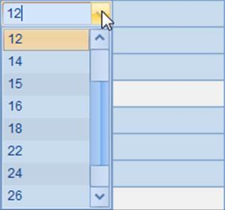
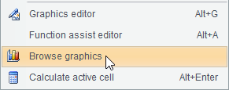
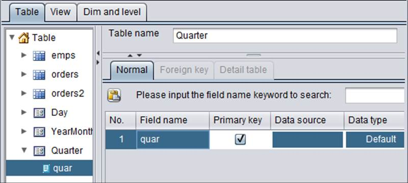

The plotting algorithm below for plotting a clustered column chart of gym results will lead you to the preliminary knowledge about how to plot a column chart:
|
|
A |
|
1 |
=canvas() |
|
2 |
=demo.query("select * from GYMSCORE") |
|
3 |
=A1.plot("BackGround") |
|
4 |
=A1.plot("EnumAxis","name":"x") |
|
5 |
=A1.plot("NumericAxis","name":"y","location":2) |
|
6 |
=A1.plot("Column","axis1":"x","data1":A2.(EVENT+","+NAME),"axis2":"y","data2":A2.(SCORE)) |
|
7 |
=A1.draw@p(450,200) |
A2 retrieves data for chart plotting from the database:

A3 plots a white background. A4 sets an enumeration axis as the horizontal axis x, with data analyzed automatically. A5 sets a numeric axis as the vertical axis y. The plotting algorithm does not plot any legends. A6 plots the column chart. Chart properties of the column element will be discussed later.
The plotting result of A7 is:

By default the fill colors of columns will be automatically generated by esProc¡¯s default pallette.
The column element needs only one pair of coordinates at minimum to be positioned. According to its numeric axis height, a column will be plotted starting from a position on axis x to the data point. Two logical axes are required to define coordinate data, and the logical coordinates on them will be defined individually.

Besides using categories to represent different events, this chart also uses series to represent athletes, so the logical coordinates on the enumeration axis should contain data of both the categories and series. Values of the two types of data will be separated by a comma, such as "Vault,Becky Downie". Similar to the dot element, multiple pairs of coordinates are for plotting multiple columns.